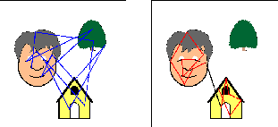
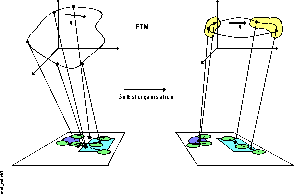

Main menu:
Die Existenz einer zeitlichen Objektrepräsentation wurde durch Hinweise aus der Elektrophysiologie und berechnungstheoretische Überlegungen motiviert. Die Elektrophysiologie zeigt, daß die Zeitachse zur Repräsentation von einfachen Stimuli genutzt wird. Die berechnungstheoretischen Überlegungen verdeutlichen, daß die Lösung des Binding-Problems, als Grundlage für die Repräsentation von Objekten, nur mit Hilfe einer sequentiellen Analyse möglich ist.
Somit wäre es effektiv, "Zwischenergebnisse" der sequentiellen Analyse bereits als Bestandteil einer Objektrepräsentation zu nutzen. Um die Problematik einzuschränken, wurde der Schwerpunkt auf eine translationsinvariante Repräsentation von 2D-Objekten gelegt.

Abb.: Illustration einer Verhaltensänderung, die der Selbstorganisation der zeitlichen Objektrepräsentation zugrunde liegt.
Das linke Bild zeigt das auffälligkeitsbasierte Abtastverhalten und das rechte Bild das angestrebte wissensbasierte Abtastverhalten.
Das funktionale Modell zur visuellen Aufmerksamkeit zeigt, das der Analyseprozeß als ein Abtastverhalten aufgefaßt werden kann. Ein sukzessives Abtasten der Objekte einer Szene (Abb.) bildet eine Lösung des Binding-Problems, da so die Bestandteile der Objekte durch eine zeitliche Nachbarschaft verbunden werden.
Aufgrund dieser Überlegungen wurde das sukzessive Abtasten der Objekte als Grundlage der zeitlichen Objektrepräsentation definiert. Da dieses Abtastverhalten nur mit Hilfe von Wissen über Objekte erzeugt werden kann, wird dieses Abtastverhalten als wissensbasiertes Verhalten bezeichnet.
Für die Entwicklung eines Verfahrens, daß dieses wissensbasierte Verhalten erzeugt, wurde die Idee eines autonomen Agenten aufgegriffen, der sich aufgrund seines Umweltwissens durch die Umwelt ,"Szene" bewegt. Dieser Agent wurde mit der Zielstellung ausgestattet, das wissensbasierte Abtastverhalten auf der Grundlage seines Umweltwissens zu realisieren.
Das Umweltwissen des Agenten besteht im wesentlichen aus den räumlichen Relationen zwischen Merkmalen und einer Bewertung, ob diese Merkmalsrelationen zu Objekten gehören (Objektzugehörigkeitswert). Das Verhalten des Agenten ist jetzt an jedem Abtastpunkt bestrebt, eine räumliche Relation zwischen Merkmalen mit einem möglichst hohen Objektzugehörigkeitswert in der Szene zu finden und diese räumliche Relation als Bewegung auszuführen.

Abb.: Diese Graphik faßt noch einmal das angestrebte Verhalten der neuronalen Modellarchitektur zusammen.
Die Verhaltensänderung durch die Selbstorganisation von einem auffälligkeitsbasierten Verhalten zu einem wissensbasierten Verhalten wird im unteren Bereich des Bilds dargestellt.
Im oberen Bereich wird das dazugehörige Verhalten der FTM-Neuronen schematisch dargestellt.
Die Verbindungslinien zwischen beiden Ebenen zeigen, daß die FTM Neuronen für räumlichen Relationen zwischen Merkmalen stehen.
Dieses Verhalten wurde in der neuronale Modellarchitektur realisiert. Dazu wurden u.a. Neuronen eingeführt, die das Umweltwissen des Agenten speichern. Diese Neuronen wurden aufgrund der Struktur, deren Bestandteil sie sind, FTM-Neuronen genannt. Diese FTM-Neuronen werden bei jeder in der Szene ausgeführten Bewegung aktiv. Wird von der neuronalen Modellarchitektur das wissensbasierte Verhalten ausgeführt, so bildet die dazugehörige Sequenz von FTM-Neuronen die angestrebte zeitliche Objektrepräsentation (Abb.). Somit sind diese FTM-Neuronen die ,"Zwischenergebnisse" der sequentiellen Szenenanalyse, die gleichzeitig eine Repräsentation bilden.
Die Simulationsergebnisse der Objektrepräsentation ergaben weitere Eigenschaften: Die Objektrepräsentation ist eine zeitliche lokale Repräsentation. Durch die Nutzung der Zeit besitzt sie eine flexible Dimensionalität, die fast beliebige Größe annehmen kann. Zur Erzeugung einer eindeutigen Repräsentation reichen Teile der hier verwendeten Objekte aus. Eine weitere wesentliche Eigenschaft der zeitlichen Objektrepräsentation ist, daß ein weiterverarbeitendes System dieser Repräsentation bereits auf der Basis der ersten Repräsentationsschritte eigene sinnvolle Ausgangszustände erzeugen kann. So können zum Beispiel bereits Handlungen bezüglich eines Objekts ausgeführt werden, ohne daß eine vollständige Repräsentation dieses Objekts erfolgt ist.
Die Simulationsergebnisse wurden ebenfalls in Beziehung zu experimentellen Ergebnissen der Psychologie gesetzt. Dabei lassen die Eigenschaften der Objektrepräsentation eine neue Interpretation der experimentellen Befunde zur ,"Automatisierung der Objektidentifikation" zu. Zusätzlich erhält das Verhalten der Modellarchitektur qualitative Unterstützung von experimentellen Ergebnissen zu Sakkaden.
weiter 4 - Selbstorgnisation